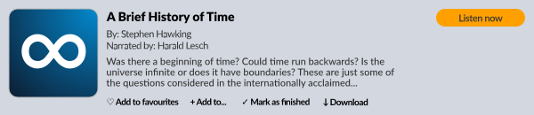

No signup, no fees, no ads, no download or technical knowledge required.
Step 1: Get your audiobooks
Open your Audible library in a web browser and begin downloading your audiobooks.

Step 2: Pick the .aax file you want to convert
Step 3: Turn the key
Think of your Audible account as a treasure chest, and your audiobooks as the treasure inside. To get them, you need your account's key (known as "activation bytes"). If you don't know them, simply let the tool analyze your file and magically discover them for you.
Quick Tip: Once you know your activation bytes, write them down somewhere! This key never changes, which means the next time you convert an audiobook, you can just type it in directly to skip the "magic discovery" and save some time.
|
Already know your activation bytes? |
|
Don't know them? No problem! |
Step 4: Pick your preferred format
| .m4b (recommended) | .mp3 | .flac | |
| Processing Time | Fast (<1 min) | ~40x slower | ~3x slower |
| Audio Quality | Matches original | Reasonable | Lossless |
| File Size | Reasonable | Can be smaller, or not | Very large |
| Chapters & Audiobook Info | Yes | No | No |
| Compatibility | Widely supported | Plays on literally anything | Should probably work |
The processing time depends on the audiobook lenght, selected format and your device's strength. This might take a while and freeze your web browser.